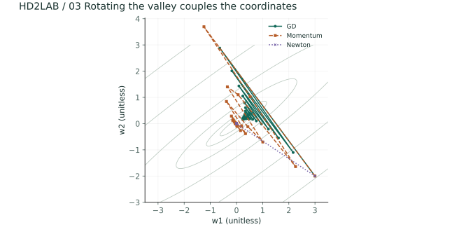
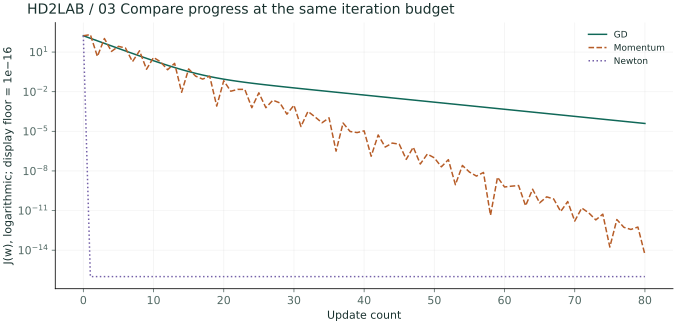
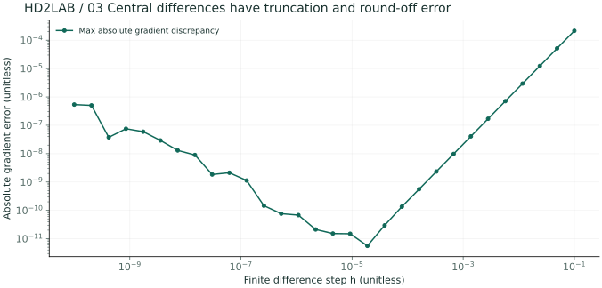
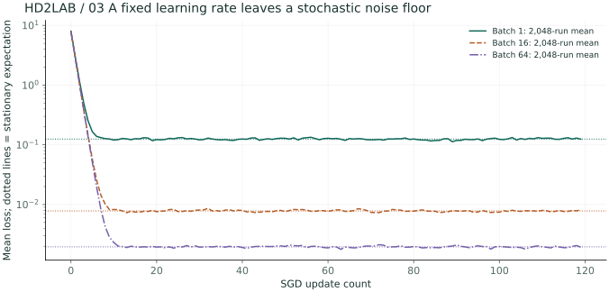

01 / Long and narrow valleys
Let’s consider the terrain that has a value of J = (u² + κv²)/2 for the two coordinates u,v. If κ is large, then the slope in the direction of v will be steep, while the slope in the direction of u will be gentle. If we move at the same step size, it’s possible to cross the valleys in the steeper directions. Many of the difficulties in model training arise from these different slopes.
02 / If we sum up all the differential equations, we get the slope.
Derivatives are the rates of change when one variable is fixed, and only one variable changes. The slope is a vector that represents the derivatives of a function. The change in the function with respect to a small displacement Δθ can be approximated by the slope and the displacement itself.
J(θ + Δθ) ≈ J(θ) + ∇J(θ)TΔθ
For movements with the same Euclidean length, the direction of the negative slope that minimizes the error in the approximation is the one corresponding to the 1th approximation. If the distance between the points is too great, the approximation becomes invalid. The slope that corresponds to 0 isn’t necessarily the minimum slope either. The origin corresponding to u² − v² is a saddle point. The slope corresponding to Hessian is a partial differential matrix of order 2. At the saddle point, it’s a strict local minimum point.
The rate of change of the 03 / synthetic function
Let’s look at p = wx + b, L = (p − y)²/2. w goes through the predicted p before entering the loss phase. By multiplying the rate of change for each connection, we can obtain the final rate of change.
∂L/∂w = (p − y)x, ∂L/∂b = p − y
x = 2, y = 5, w = 1, b = 0 The side losses are… 4.5, w The angle of inclination is… −6 It’s just that the learning rate… 0.1 Roads w,b If we renew them together, then… 1.6,0.3 And the losses are… 1.125 D.
The sum of the derivatives of the vector outputs is given by Jacobian. In this case, the rows represent the outputs, and the columns represent the inputs. Jf∘g = JfJgIt is valid. The backpropagation process starts from the loss vector, instead of starting from the entire Jacobian. It then calculates the products of each layer’s Jacobian with this loss vector, in reverse order.
Conditions for the stability of the learning rate: 04 /
In a second-order function, u becomes 1 − η times the result, and v becomes 1 − ηκ times the result. Both absolute values must be less than 1 in order for the function to converge back to the origin from any starting point.
ut+1 = (1 − η)ut
vt+1 = (1 − ηκ)vt
0 < η < 2/max(1,κ)
κ = 6 On the other side η It’s… 1/3 It needs to be smaller. 0.15 And… 0.4 Let’s compare them. At the boundary values, there may be oscillations that do not decrease. In general, non-linear models make it difficult to determine the curvature at all points. Therefore, it’s necessary to manage both the change in loss and the termination conditions simultaneously.
05 / Coordinate adjustment and probabilistic renewal
The “alignment correction” in the experiment involves dividing the angle in the direction of v by κ. Both directions are reduced by the same ratio. This can be understood through a proper coordinate transformation. Standardization of the characteristics might also be useful, but it doesn’t always result in perfect alignment, as seen in this example.
SGD It uses a small random sample to estimate the overall slope, thereby reducing the computational cost. This approach results in a biased estimate under conditions like uniform sampling. However, the loss at each individual step can increase. The batch size and learning rate affect both the cost and variability.
import numpy as np
point = np.array([3., 2.])
kappa, rate = 6., .15
losses = []
for step in range(45):
losses.append((point[0]**2 + kappa*point[1]**2)/2)
point -= rate*np.array([point[0], kappa*point[1]])
print("final point:", point)
print("loss decreased:", losses[-1] < losses[0])The 06 / experiment and its validation
Let’s check whether the curvature becomes smaller when 2,6,12 is used. We will also compare the results before and after the axis calibration. Paths that are outside the fixed coordinate frame will be truncated. If the loss exceeds 10¹², the iteration will be stopped.
How is the implementation of the slope mechanism verified?
The difference between the functions obtained by adding and subtracting a small value of h from each coordinate, divided by 2h, is compared with the mean difference. If h is too small, the floating-point errors will become more significant.
Does a very small learning rate solve all problems?
The convergence can be slow. It doesn’t address all the issues related to saddle points, local minima, and incorrect slopes.
Advanced/Deeper A / Comparison of three optimization methods in a rotated valley
Problem to explore In a narrow valley that is not parallel to the axis, which path will be taken by GD, and what will be the role of the moment of inertia, Newton?
It’s a matrix of type J(w)=½wᵀHw, H=R diag(1,30) Rᵀ. The matrix R is a rotation matrix of type 36°. The starting point is [3,−2]ᵀ], and the minimum value is the origin. After 80 iterations, the GD(η=0.06), heavy-ball moment (η=0.07, β=0.65), Newton(η=1)) is compared. This is a deterministic experiment, and all coordinates are dimensionless.
Momentum: vt+1=βvt+Hwt, wt+1=wt−ηvt+1
Newton: HΔ=∇J(w), w←w−Δ
- GD If we translate it into coordinates with a proper vector, the errors will be each… 1−ηλ It’s multiplied by the same amount. η=0.06 In… λ=1 The direction is… 0.94, λ=30 The direction is… −0.8 Next, there is a slow decrease in intensity, along with accompanying vibrations.
- The momentum accumulates over previous movements. Even if η is greater than the upper limit 2/30 of GD, the same simple GD condition cannot be applied. It’s necessary to check the magnitude of the characteristic equation r²−(1+β−ηλ)r+β=0 for each individual direction.
- After 80 epochs, the loss is GD 3.93e-05, and the momentum is 4.63e-15. These values represent the results of the specified quadratic equations. It doesn’t mean that the momentum increases rapidly across all losses.
- Newton In this quadratic equation of the form of a linear function, there is a precise solution. Hessian It’s possible to solve it all at once, back to the starting point. In large models, the cost of solving linear equations is quite high. Additionally, there are problems related to non-convex problems… Hessian They may not have the same properties.


Currently H If we multiply the diagonal component by its inverse, then… Newton Is it the same as that?
No. Rotation makes the off-diagonal entries nonzero. The reciprocal diagonal of H only rescales coordinates and cannot remove coupling between axes. Newton solves the full H linear system in this example.
Advanced B / Check the logistic gradient with central differences
Problem to explore Before trusting the directly differentiated vector gradient, let’s check it using numerical differentiation.
The rows of the 6×3 design matrix, including the intercept, are [1,−2,.5], [1,−1,1], [1,−.5,−1], [1,.5,.2], [1,1,−.7], [1,2,1.2]. Set y=[0,0,1,0,1,1] and check at w=[.2,−.3,.4]. Use mean binary cross-entropy without regularization.
∇J = Xᵀ(sigmoid(Xw)−y)/N
gⱼFD=[J(w+heⱼ)−J(w−heⱼ)]/(2h)
- If we simply calculate log(1+exp(z)), then it’s possible for z to exceed overflow. The same value can be calculated stably using NumPy logaddexp(0,z).
- The interpretive slope is [0.065, -0.534, 0.256]]. The magnitude of the heat vector is 3, and the signs of each term indicate the direction of change in the loss as the corresponding parameter increases.
- Replace h with 10⁻¹~10⁻¹⁰ to represent the maximum absolute difference. The minimum difference for this operation is 5.58e-12. A value too large as h would result in truncation errors. A value too small as h would lead to additive errors between two similar values.
- It checks against multiple parameter points and input sizes. Just because there’s a match at one point doesn’t mean that the entire learned code is correct.

Expand the core calculation code
An excerpt from the corresponding advanced Python function. Full data generation and helper functions are available in the downloads below.
def loss(w):
z = X @ w
return np.mean(np.logaddexp(0, z) - y * z)
p = 1 / (1 + np.exp(-(X @ w)))
gradient = X.T @ (p - y) / len(y)
h = 1e-5
numeric = np.array([(loss(w+h*e)-loss(w-h*e))/(2*h)
for e in np.eye(len(w))])
print(np.max(np.abs(numeric - gradient)))Predicting the noise floor of the advanced C / SGD using certain methods
Problem to explore Let’s try to predict the formula that explains why, even when using the correct slope, the loss doesn’t drop to 0.
Scalar losses J(w)=λw²/2, λ=4 It’s used for that purpose. The mini-configuration slope is… g=λw+ξ, Eξ=0, Varξ=σg²/B It’s a model-based approach. σg=2, η=0.1 , Start w=2 It’s actually a simple experiment where the Gaussian noise caused by the batch size is directly generated, instead of using actual datasets as the basis for the analysis. It’s a simplified approach. 2303 , each one B Each one 2,048 Average the individual independent paths.
V∞=(1−ηλ)²V∞+η²σg²/B
E[J]∞=ησg² / [2B(2−ηλ)]
- The slope noise is independent of the current value w. Also, |1−ηλ|…<If 1 is finite, then a finite normal distribution can be obtained. In this case, it’s 1−ηλ=0.6.
- Even after the effect of the initial values disappears, new noise signals continue to appear. Therefore, the constant learning rate creates a certain level of loss floor.
- The theoretical loss function for B=1,16,64 is each 0.125, 0.0078125, 0.001953125. If the batch size is increased by 16 times, the normal loss of this simple model becomes 1/16.
- Even if the learning rate is reduced, the noise floor will still decrease. However, the initial convergence process will be slower. The computational cost associated with increasing the batch size, as well as issues related to data correlation and non-linear losses, mean that this formula cannot be used directly as a guarantee of performance improvement.

If we keep η at its GD value, will there still be this loss floor?
If σg=0, then the theoretical normal loss is 0. In the deterministic quadratic equation of the learning rate, the initial error decreases exponentially. The current “floor” is created by continuously injecting new gradients with a constant learning rate.
Reproduce the results and change conditions
The figures are precomputed from this chapter's advanced Python experiments. The notebook contains code for seven chapters and 28 figure outputs. Calculations require NumPy; regenerating figures also requires Matplotlib.
Place both Python files in the same folder. The calculation script's
--chapter 3 option runs just this chapter. The figure script's
--output ./figures option generates 28 SVG figures.
Further reading: References for related concepts · Terms and Notation